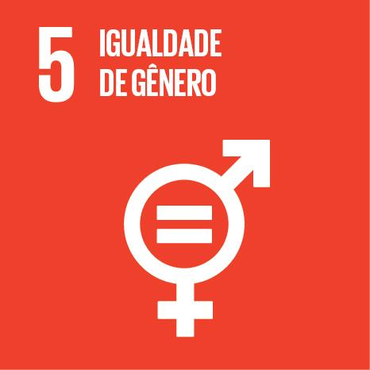

Alcançar a igualdade de gênero e empoderar todas as mulheres e meninas
A ODS 5, ou Objetivo de Desenvolvimento Sustentável 5, busca alcançar a igualdade de gênero e empoderar todas as mulheres e meninas. Seu foco está em eliminar todas as formas de discriminação, violência e práticas prejudiciais contra mulheres e meninas, garantir igualdade de oportunidades no mercado de trabalho, na educação e na participação política, além de promover a saúde e o bem-estar para todas. O objetivo é criar uma sociedade mais justa e igualitária, onde todos tenham os mesmos direitos e oportunidades, independentemente do gênero.
A busca pela igualdade de gênero enfrenta diversos desafios complexos e interligados. Um dos principais obstáculos está enraizado nos estereótipos e normas culturais que determinam papéis rígidos para homens e mulheres, perpetuando a ideia de que certos comportamentos, profissões ou responsabilidades são “naturais” de um gênero ou outro. Essas crenças limitam as oportunidades, especialmente das mulheres e das pessoas que fogem dos padrões tradicionais de gênero. Outro desafio central é a violência de gênero, que inclui agressões físicas, psicológicas, sexuais e até econômicas. Essa violência limita a liberdade e a segurança de mulheres e pessoas LGBTQIA+, dificultando sua participação plena na sociedade.
A promoção da igualdade de gênero é crucial para a redução da violência de gênero. A desigualdade é um dos principais fatores que alimenta abusos e agressões, e uma sociedade mais igualitária tende a ser mais segura, com políticas eficazes de combate à violência. Em um cenário de maior equidade, as mulheres e minorias de gênero se tornam mais protegidas e têm maiores condições de se expressar e viver sem medo de discriminação ou abuso. A igualdade de gênero é fundamental para a construção de sociedades mais justas, equilibradas e prósperas. Ela vai além da questão da justiça social, representando um princípio básico dos direitos humanos. Todos os indivíduos, independentemente de seu gênero, devem ter as mesmas oportunidades e direitos, e lutar por essa igualdade é garantir que todos possam viver com dignidade, sem discriminação.